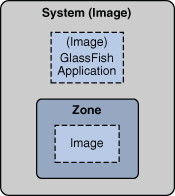

OpenSolaris 2009.06 Image Packaging System Guide
|
|||||||||||||||
|
4. Creating and Managing Images 7. Using Keys and Certificates for Repositories |
Why Should You Create an Image?The pkg command can be used to create and manage images. The pkg image-create subcommand sets up a relationship between the image, a publisher and a package repository that can be used to retrieve package information and content and perform packaging operations within an image. An image is a location on your system where packages and their associated files, directories, links, and dependencies can be installed. An image can be one of these types:
After you have completed the installation of the OpenSolaris 2009.06 release on your system, the root file system and its contents are already contained within an image. As a result, you do not need to create an image to perform software management tasks for the installed system. However, creating images is required to provide logical separation between different software applications, such as those that occur during a zone creation process. The following figure shows the concept of an image: Figure 4-1 Concept of an ImageSee the Zones section in the Solaris Containers - Resource Management and Solaris Zones guide to learn about zones. The following image creation and image management tasks are supported: Note - See the Table 10-1 section for a complete list of options supported with each pkg(1) command. How to Create an ImageBefore You BeginEnsure that you have write privileges to the directory where you are attempting to create an image. See the Image Creation: Important Considerations section for important information about image creation.
Example 4-1 Creating a Full ImageIn this example, a full image is created with a package repository located at http://pkg.example.com, with example.com set as the preferred publisher. The image is created in the directory /aux0/example_root. The -p option is used to specify the location of the package repository such as http://pkg.example.com/. $ pfexec pkg image-create -F -p example.com=http://pkg.example.com/ /aux0/example_root How to Display Image Properties
Example 4-2 Displaying Image Property$ pkg property PROPERTY VALUE send-uuid False require-optional False flush-content-cache-on-success False display-copyrights True preferred-publisher opensolaris.org pursue-latest True How to Set Image Properties
Example 4-3 Set the Value of an Image PropertyThis example sets the value of the send-uuid property. $ pkg property PROPERTY VALUE send-uuid False require-optional False flush-content-cache-on-success False display-copyrights True preferred-publisher opensolaris.org pursue-latest True $ pkg -R set-property send-uuid True $ pkg property PROPERTY VALUE send-uuid True require-optional False flush-content-cache-on-success False display-copyrights True preferred-publisher local pursue-latest True How to Remove Image Properties
Example 4-4 Remove an Image PropertyThis example removes the send-uuid property. $ pkg unset-property send-uuid $ pkg property PROPERTY VALUE send-uuid False require-optional False flush-content-cache-on-success False display-copyrights True preferred-publisher local pursue-latest True How to Update an Image (Update All Installed Packages)This task updates all installed packages in the current image to the latest available version. Note - All packages that have been updated in the repository will be downloaded and installed. All packages for the publishers configured in the image, excluding disabled publishers, will be retrieved and upgraded for those that have newer versions available. If more than one publisher offers the same package, then the package will be downloaded from the preferred publisher.
Example 4-5$ pfexeec pkg image-update A clone of opensolaris exists and has been updated and activated. On next boot the Boot Environment opensolaris-1 will be mounted on '/'. Reboot when ready to switch to this updated BE. os# beadm list BE Active Active on Mountpoint Space Name reboot Used ---- ------ --------- ---------- ----- opensolaris yes no legacy 57.5K opensolaris-1 no yes - 2.59G In this example, the initial boot environment created by the installer is named opensolaris. The boot environment created by the pkg image-update command is automatically named opensolaris-1. After rebooting to the changed boot environment, any inactive boot environment can be destroyed to save space by running the beadm destroy command. For more information regarding boot environments and the beadm(1) command, see the Upgrading and Managing Your Boot Environments section. Example 4-6 Update an Image in a Mounted, Inactive Boot EnvironmentThis example updates an image in a boot environment that is mounted at /mnt. # beadm mount BE1 /mnt # pkg -R /mnt image-update See AlsoUpdating Your Image: Important Considerations Image Creation: Important Considerations
Updating Your Image: Important Considerations
|
||||||||||||||
|